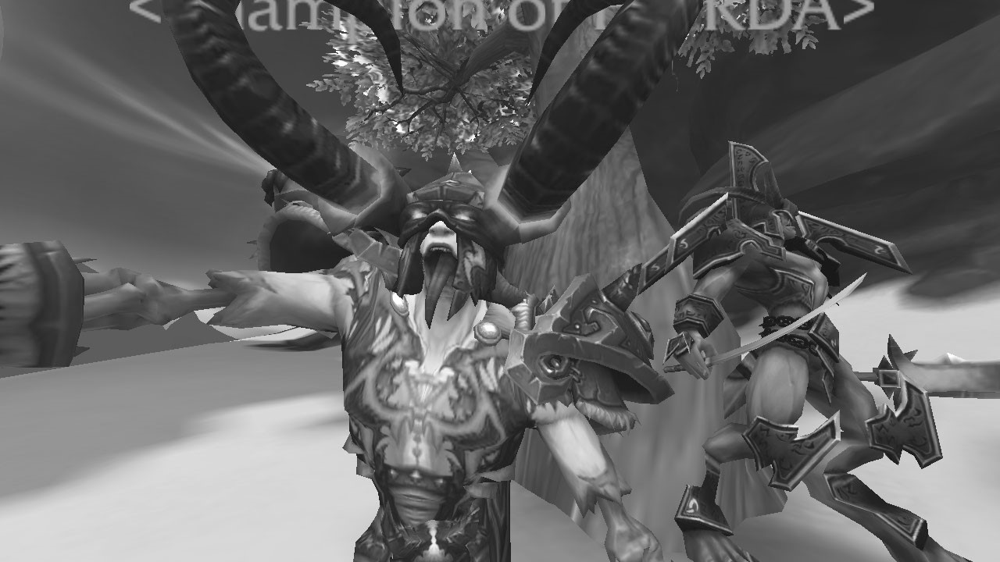

World of Warcraft el juego cuyo reinado no acaba.
WoW un mmorpg que tuvo un inicio explosivo el 23 de noviembre de 2004 gracias a su antecesor Warcraft 3, WoW es el videojuego que aún después de tanto tiempo tiene en su poder una cantidad muy grande de jugadores devotos; WoW ha tenido muchísimas expansiones, de las cuales la más aclamada por todos ha sido Wrath of The Lich King ya que da fin a la historia que se venía siguiendo de Warcraft 3 y es en donde los jugadores derrotan el Rey Exánime en la cima del trono congelado, al derrotar al jefe en la cinemática final del juego el padre de Arthas (Rey Exánime) dice las siguientes palabras “Ningún rey gobierna para siempre hijo mío”, y tal parece que es una frase muy acertada ya que desde el final de esta expansión y las venideras, la cartera de jugadores activos ha disminuido considerablemente, y con la decadencia del género mmorpg versus juegos como Fortnite y similares ha puesto a WoW en una situación crítica segmentando a la comunidad del mismo en dos grupos, aquellos que creen que el juego ha muerto y otro grupo que tiene la esperanza que el juego vuelva a su era dorada; de cualquier manera WoW sigue siendo el rey de los mmorpg, entonces ¿El reinado de World of Warcraft llegará a su fin o se impondrá ante la corriente y volverá a renacer como uno de los mejores? Eso el tiempo lo decidirá.
